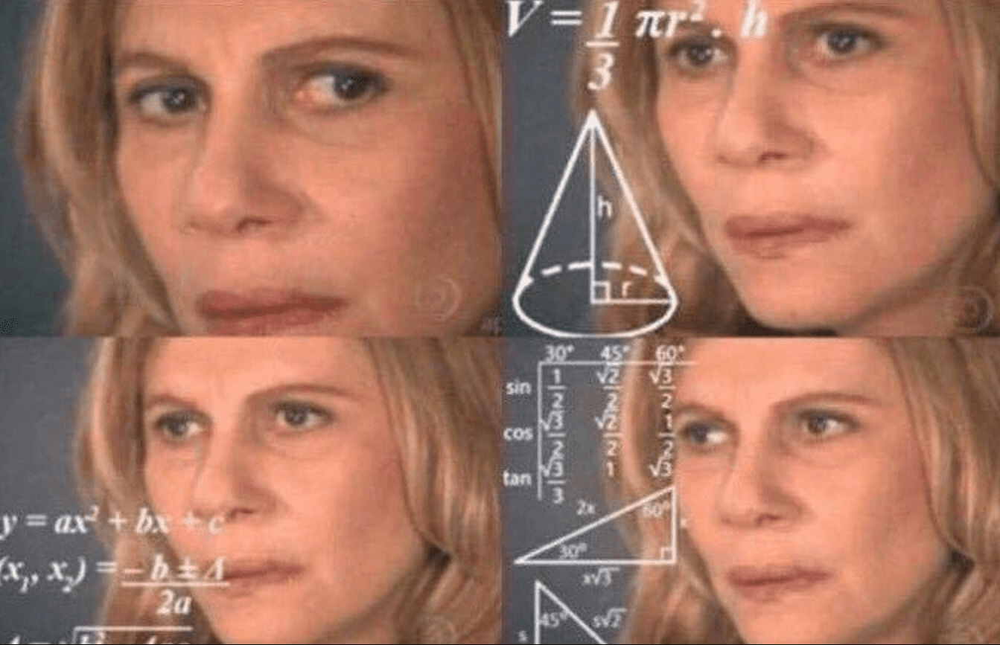

A burning question that has divided mathematicians for years is finally answered by me, Stephen Buckley: a high school student definitely not qualified to prove mathematical concepts.
There are only two possible numerical values for 00, 0 and 1. The states that any number raised to the 0th power is 1. It is also common knowledge that 0 raised to any power is 0. From these rules, it is clear that 00 will not produce any number (if any) that is not 0 or 1. However, 00 doesn't have to be a number, as it could be undefined. Many expressions are undefined, such as 1 divided by 0, or the natural log of 0.
If 00 = 1, then you can reasonably assume that 0x = 1 will produce an x value of 0. Let's test this:
0x = 1
ln(0x) = ln(1)
ln(0)x = ln(1)
x = ln(1)⁄ln(0)
x = 0⁄undefined
We come across a problem here. The natural log of 0 is undefined, as shown below:
loge0 = z
ez = 0
There is no power of e that will produce 0, so the natural log of 0 is undefined.
Since the test produced an undefined expression in the denominator, we can reasonably conclude that no power of 0 will produce 1. Therefore, 00 ≠ 1.
0 is special. It is neither positive nor negative. Therefore, you can treat it either as a positive number or a negative number without affecting the results of your calculations.
We can say that 0 = +0 = -0
Therefore, we can say that 0+0 = 0-0
Remember the rule for negative exponents: x-y = 1⁄xy
Plugging in 0, we get 0-0 = 1⁄0+0
This simplifies to 00 = 1⁄00
Assuming that 00 = 0, using substitution we get 0 = 1⁄0
1⁄0 is undefined, so we get 0 = undefined. 0 is clearly a defined number, so this is plain wrong.
For 00 to equal 0, both 0+0 and 0-0 must produce 0. This is not the case, so 00 ≠ 0.
As previously mentioned, 00 can only be three values: 0, 1, or undefined. I have thoroughly disproved 0 and 1 as possibilities, so it is clear that 00 is undefined.
In my mind, this is perfectly normal. Look at the table below (DNE = Does Not Exist):
| x | f(x) = 0x |
|---|---|
| -2 | DNE |
| -1 | DNE |
| 0 | DNE |
| 0.25 | 0 |
| 0.5 | 0 |
| 1 | 0 |
| 2 | 0 |
If 0 to any negative power is undefined, why can't 0 to the 0th power be undefined? (Hint: It can)
Think logically for a second. If you have the number 0 and the exponent it's raised to is 0, how would a result of 1 make any sense? The answer: it doesn't.
The reasonable conclusion to make out of all of this is simply that f(x) = 0x only exists for the domain x = (0, ∞), with 00 not existing.